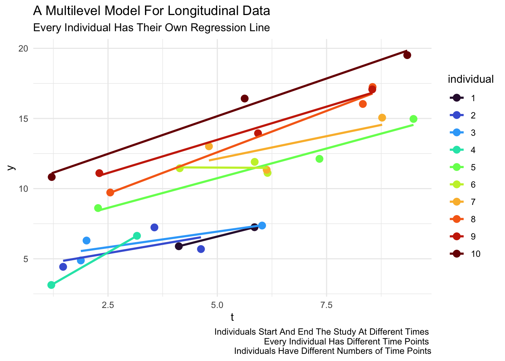

Why Multilevel Models Are Good Models For Longitudinal Data
Multilevel Models Offer An Incredibly Flexible Treatment of Time and Time Varying Processes and Covariates
1 Visually
2 Data Structures
Multilevel models for longitudinal data prefer data in long format.
| id | x1 | x2 | x3 | y1 | y2 | y3 |
|---|---|---|---|---|---|---|
| 1 | ||||||
| 2 | ||||||
| 3 |
| id | t | x | y |
|---|---|---|---|
| 1 | 1 | ||
| 1 | 2 | ||
| 1 | 3 | ||
| 2 | 1 | ||
| 2 | 2 | ||
| 2 | 3 | ||
| 3 | 1 | ||
| 3 | 2 | ||
| 3 | 3 |
3 Equation
\[y_{it} = \beta_0 + \beta_1 t_{it} + \beta_2 x_{it} + u_{0i} + e_{it} \tag{1}\]
Person-Observations
Every row is a person-observation (person i observed at time t). Every person has multiple rows.
4 Advantages of the Multilevel Model for Longitudinal Data
- There is no multicollinearity issue with multiple \(\beta\) coefficients for multiple waves of data. By inspection of Equation 1, we see that there is only a single \(\beta\) coefficient for each variable, \(\therefore\) no multicollinearity problem.
- Unbalanced data is less of a problem, the data structure and estimation are robust to these possibilities (Singer and Willett 2003; Raudenbush and Bryk 2002).
- Missing data is less of a problem (assuming MCAR). When a person observation is missing, that person simply has fewer rows of data (J. Hox 2010; Luke 2004; Raudenbush and Bryk 2002; Rabe-Hesketh and Skrondal 2022). But all rows of data are “matched” to the same person by \(i\).
- We have an explicit function of time \(\beta_1 t\), and could treat time more flexibly, by creating a polynomial function of time e.g. by adding \(\beta_2 t^2\), etc. (Raudenbush and Bryk 2002; Singer and Willett 2003). (We could even substitute \(\beta \ln(t)\).)
- Again, by inspection of Equation 1, we see that multiple or many time-points are not a problem. We would use the same algebra for 2 time points or for 10,000 time points. (Helpful when we start to think about intensive longitudinal data e.g. George Holden’s recording study).
- We are measuring exactly the time at which events take place for each individual (Singer and Willett 2003; Luke 2004). Not simply saying Wave 1, Wave 2, Wave 3, etc…
- Every individual could have a completely different set of time points and even a completely different number of time points (J. Hox 2010; J. J. Hox, Moerbeek, and van de Schoot 2018; Singer and Willett 2003; Luke 2004).
Caution
We do need to think carefully about what is the appropriate variable for time. Is it the variable we used to reshape the data–often wave–or some other more appropriate metric, like age or time in study (Singer and Willett 2003)?
References
Hox, Joop. 2010. Multilevel Analysis: Techniques and Applications. 2nd ed. Routledge.
Hox, Jop J, Mirjam Moerbeek, and Rens van de Schoot. 2018. Multilevel Analysis: Techniques and Applications. Multilevel Analysis: Techniques and Applications. Third edition. Routledge, Taylor & Francis Group,.
Luke, Douglas. 2004. Multilevel Modeling. SAGE Publications, Inc. https://doi.org/10.4135/9781412985147.
Rabe-Hesketh, Sophia, and Anders Skrondal. 2022. Multilevel and Longitudinal Modeling Using Stata. Stata Press. 4th ed. Stata Press.
Raudenbush, Stephen W, and Anthony S Bryk. 2002. Hierarchical Linear Models: Applications and Data Analysis Methods. Sage Publications.
Singer, Judith D, and John B Willett. 2003. Applied Longitudinal Data Analysis : Modeling Change and Event Occurrence. Oxford University Press.